WarcryTopStarter
WarcryTopStarter
Leveling
Brez respecaGlavni skill War Cry je na voljo od levela 6.Hiim ga ima za starter build (farma: Travincal, Chaos, Early Map, Key Farming).V S13 je 6 od 10 najhitrejših igralcev imelo ta skill že na levelu 80. Do levela 95 so prišli v mediani 11,7. dan sezone.Med planerji spodaj je tudi začetni (leveling) planer.
Planerji (Hiim)
EndgameWarcrylevel 95 · Hiim
Stati: Str 0 · Dex 0 · Vit 485 · Ene 0
 Battle Command 20
Battle Command 20 Battle Cry 20
Battle Cry 20 Battle Orders 20
Battle Orders 20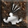
Howl 20War Cry 20 Combat Reflexes 1
Combat Reflexes 1 Increased Speed 1
Increased Speed 1 Iron Skin 1
Iron Skin 1 Natural Resistance 1
Natural Resistance 1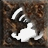
Shout 1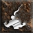
Taunt 1 OrožjeBone thirstArchon Staff
OrožjeBone thirstArchon Staff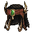
HelmWildspeaker OklepEnigma
OklepEnigma Jah
Jah Ith
Ith Ber · Archon Plate
Ber · Archon Plate RokaviceSoul Drainer
RokaviceSoul Drainer PasArachnid Mesh
PasArachnid Mesh ŠkornjiMarrowwalk
ŠkornjiMarrowwalk AmuletSkull collar
AmuletSkull collar PrstanConstricting RingPrstanConstricting Ring
PrstanConstricting RingPrstanConstricting Ring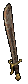
SwitchBlade of Ali Baba Hellfire Torch
Hellfire Torch Annihilus
Annihilus Gheed's Fortune
Gheed's FortuneMerc: Desert Guard (Defiance)
 OrožjeThe Reaper's Toll
OrožjeThe Reaper's Toll HelmGriffon's Eye
HelmGriffon's Eye OklepInnocence
OklepInnocence Gul
Gul Lem
Lem Zod
Zod Hel · Shadow Plate
Hel · Shadow Plate RokaviceLaying of HandsŠkornjiMarrowwalk
RokaviceLaying of HandsŠkornjiMarrowwalk PasString of Ears
PasString of EarsZačetek in levelingWarcrylevel 75 · Hiim
Stati: Str 11 · Dex 0 · Vit 374 · Ene 0
Battle Command 20Battle Cry 20War Cry 20Howl 16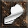
Bash 1Battle Orders 1Combat Reflexes 1Increased Speed 1Iron Skin 1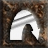
Leap 1Natural Resistance 1Shout 1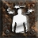
Stun 1Taunt 1 OrožjeSpirit
OrožjeSpirit Tal
Tal Thul
Thul Ort
Ort Amn · Crystal SwordDruga rokaSpiritTalThulOrtAmn · Crystal Sword
Amn · Crystal SwordDruga rokaSpiritTalThulOrtAmn · Crystal Sword HelmLoreOrt
HelmLoreOrt Sol · Bone HelmOklepStealthTal
Sol · Bone HelmOklepStealthTal Eth · Light Plate
Eth · Light Plate RokaviceCaster Craft GlovesLeather Gloves
RokaviceCaster Craft GlovesLeather Gloves PasCaster Craft BeltSashAmuletEchoing AmuletPrstanBrilliant Craft Ring + FCRPrstanBrilliant Craft Ring + FCR
PasCaster Craft BeltSashAmuletEchoing AmuletPrstanBrilliant Craft Ring + FCRPrstanBrilliant Craft Ring + FCRMerc: Desert Guard (Defiance)
 OrožjeInsight
OrožjeInsight Ral
Ral TirTalSol · War Pike
TirTalSol · War PikeKaj nosijo liki 90+ v S13 (skill War Cry na 20)
Arachnid Mesh 61 %Enigma 56 %Gheed's Fortune 50 % Brimstone Rain 24 %Ondal's Wisdom 23 %Wildspeaker 22 %Constricting Loop 22 %
Brimstone Rain 24 %Ondal's Wisdom 23 %Wildspeaker 22 %Constricting Loop 22 % Naj's Puzzler 19 %
Naj's Puzzler 19 %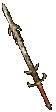
The Grandfather 17 % Dracul's Grasp 16 %Blade of Ali Baba 16 %The Stone of Jordan 15 %
Dracul's Grasp 16 %Blade of Ali Baba 16 %The Stone of Jordan 15 %Video in vodiči
 Whirlwind (2-H)TopStarter
Whirlwind (2-H)TopStarter
Leveling
Brez respecaGlavni skill Whirlwind je na voljo od levela 30.Hiim ga ima za starter build (farma: Chaos, Early Map).V S13 je 8 od 8 najhitrejših igralcev imelo ta skill že na levelu 80. Do levela 95 so prišli v mediani 11,9. dan sezone.
Planerji (Hiim)
EndgameWhirlwind (2-H) {Auto-Generated}level 95 · Hiim
Stati: Str 105 · Dex 0 · Vit 380 · Ene 0
Battle Command 20Battle Orders 20 Two Hand Mastery 20Whirlwind 20Iron Skin 11Increased Speed 3Battle Cry 1
Two Hand Mastery 20Whirlwind 20Iron Skin 11Increased Speed 3Battle Cry 1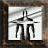
Berserk 1Combat Reflexes 1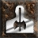
Concentrate 1 Deep Wounds 1
Deep Wounds 1 Double Swing 1
Double Swing 1 Grim Ward 1Howl 1Natural Resistance 1Shout 1Taunt 1War Cry 1
Grim Ward 1Howl 1Natural Resistance 1Shout 1Taunt 1War Cry 1 HelmHalaberd's Reign
HelmHalaberd's Reign OklepTyrael's Might
OklepTyrael's Might RokaviceSteelrend
RokaviceSteelrend PasSiggard's Staunch
PasSiggard's Staunch ŠkornjiGore RiderAmuletHighlord's WrathPrstanWisp ProjectorSwitchCall to ArmsAmnRal
ŠkornjiGore RiderAmuletHighlord's WrathPrstanWisp ProjectorSwitchCall to ArmsAmnRal Mal
Mal Ist
Ist Ohm · Crystal SwordHellfire TorchAnnihilus
Ohm · Crystal SwordHellfire TorchAnnihilusMerc: Rogue Scout (Meditation)
 OrožjeMist
OrožjeMist Cham
Cham ShaelGulThulIth · Demon Crossbow
ShaelGulThulIth · Demon Crossbow Druga rokaBannerlord's Call
Druga rokaBannerlord's Call HelmVampire Gaze
HelmVampire Gaze OklepTemplar's Might
OklepTemplar's Might RokaviceLava GoutŠkornjiMarrowwalkPasString of Ears
RokaviceLava GoutŠkornjiMarrowwalkPasString of EarsKaj nosijo liki 90+ v S13 (skill Whirlwind na 20)
Gheed's Fortune 71 %Gore Rider 60 %Raven Frost 53 %Highlord's Wrath 50 %Steelrend 41 %Halaberd's Reign 29 %Wisp Projector 25 %Fortitude 24 % Nosferatu's Coil 23 %Siggard's Staunch 19 %
Nosferatu's Coil 23 %Siggard's Staunch 19 % Wraithskin 19 %Soul Drainer 18 %
Wraithskin 19 %Soul Drainer 18 %Video in vodiči
 Double ThrowTopStarter
Double ThrowTopStarter
Leveling
Brez respecaGlavni skill Double Throw je na voljo od levela 12.Hiim ga ima za starter build (farma: Chaos, Early Map).V S13 je 5 od 10 najhitrejših igralcev imelo ta skill že na levelu 80. Do levela 95 so prišli v mediani 16,0. dan sezone.Med planerji spodaj je tudi začetni (leveling) planer.
Planerji (Hiim)
Začetek in levelingStarter: Laceratorslevel 91 · Hiim
Deep Wounds 20Double Throw 20 Throwing Mastery 20Battle Command 1Battle Orders 1Combat Reflexes 1Double Swing 1
Throwing Mastery 20Battle Command 1Battle Orders 1Combat Reflexes 1Double Swing 1 Frenzy 1Grim Ward 1Howl 1Increased Speed 1Iron Skin 1Natural Resistance 1Shout 1Taunt 1War Cry 1
Frenzy 1Grim Ward 1Howl 1Increased Speed 1Iron Skin 1Natural Resistance 1Shout 1Taunt 1War Cry 1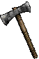
OrožjeLaceratorv socketih: Ruby Jewel of Fervor · korupcija: socketiDruga rokaLacerator
 HelmDemonhorn's EdgeOklepHustleShael
HelmDemonhorn's EdgeOklepHustleShael Ko
Ko Eld · Archon PlateRokaviceDracul's GraspPasNosferatu's CoilŠkornjiGore RiderAmuletHighlord's WrathPrstanRaven FrostPrstanBul-Kathos' Death BandHellfire TorchAnnihilus
Eld · Archon PlateRokaviceDracul's GraspPasNosferatu's CoilŠkornjiGore RiderAmuletHighlord's WrathPrstanRaven FrostPrstanBul-Kathos' Death BandHellfire TorchAnnihilusMerc: Barbarian (Might)
 HelmDuskdeep
HelmDuskdeep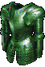
OklepLeviathan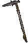
OrožjeCranebeakRokaviceDracul's GraspŠkornjiMarrowwalkPasString of EarsEndgameEnd-game: Wraith Flight + Enigmalevel ? · Hiim
EndgameDouble Throwlevel 91 · Hiim
Stati: Str 180 · Dex 170 · Vit 115 · Ene 0
Battle Command 20Double Swing 20Double Throw 20Frenzy 20Throwing Mastery 11Battle Orders 1Combat Reflexes 1Deep Wounds 1Grim Ward 1Howl 1Increased Speed 1Iron Skin 1Natural Resistance 1Shout 1Taunt 1War Cry 1OrožjeWraith Flightv socketih: 2× vs Demon Jewel · korupcija: ED Deadly
Druga rokaLaceratorv socketih: Ruby Jewel of Fervor, Cham Rune · korupcija: IAS Enhanced Damage
 HelmVeil of Steelv socketih: 3× vs Demon Jewel · korupcija: socketiOklepEnigmaJahIthBer · Archon PlateRokaviceSteelrendkorupcija: Deadly StrikePasArachnid Meshkorupcija: Increased Attack SpeedŠkornjiGore Riderkorupcija: Physical Damage Reduction %AmuletHighlord's Wrathkorupcija: CBFPrstanWisp Projectorkorupcija: Faster Cast RatePrstanConstricting RingHellfire Torch
HelmVeil of Steelv socketih: 3× vs Demon Jewel · korupcija: socketiOklepEnigmaJahIthBer · Archon PlateRokaviceSteelrendkorupcija: Deadly StrikePasArachnid Meshkorupcija: Increased Attack SpeedŠkornjiGore Riderkorupcija: Physical Damage Reduction %AmuletHighlord's Wrathkorupcija: CBFPrstanWisp Projectorkorupcija: Faster Cast RatePrstanConstricting RingHellfire Torch Annihilus +2
Annihilus +2Merc: Barbarian (Might)
 HelmAndariel's VisageOklepInnocenceGulLemZodHel · Archon Plate
HelmAndariel's VisageOklepInnocenceGulLemZodHel · Archon Plate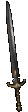
OrožjeBlacktongueRokaviceDracul's GraspŠkornjiMarrowwalkPasSiggard's StaunchKaj nosijo liki 90+ v S13 (skill Double Throw na 20)
Gheed's Fortune 59 %Gore Rider 51 %Nosferatu's Coil 46 %Raven Frost 44 %Highlord's Wrath 44 %Fortitude 28 %Lacerator 25 %Soul Drainer 23 %Wisp Projector 21 %Atma's Scarab 20 %Veil of Steel 19 % War Traveler 19 %
War Traveler 19 %Video in vodiči
Whirlwind (Dual Wield)GoodStarter
Leveling
Brez respecaGlavni skill Whirlwind je na voljo od levela 30.Hiim ga ima za starter build (farma: Chaos, Early Map).V S13 je 8 od 8 najhitrejših igralcev imelo ta skill že na levelu 80. Do levela 95 so prišli v mediani 11,9. dan sezone.
Planerji (Hiim)
EndgameWhirlwind (Dual Wield)level 99 · Hiim
Battle Command 20Deep Wounds 20Grim Ward 20Whirlwind 20Increased Speed 10Frenzy 8Battle Orders 1Berserk 1Combat Reflexes 1Concentrate 1Double Swing 1Howl 1Iron Skin 1Natural Resistance 1 One Hand Mastery 1Shout 1Taunt 1War Cry 1
One Hand Mastery 1Shout 1Taunt 1War Cry 1OrožjeThe Grandfatherkorupcija: socketi
 Druga rokaSchaefer's Hammerkorupcija: socketiHelmHalaberd's Reignkorupcija: socketiOklepTyrael's Mightkorupcija: socketiRokaviceSoul Drainerkorupcija: All ResistancesPasString of Earskorupcija: Faster Run WalkŠkornjiGore Riderkorupcija: Faster Run WalkAmuletAtma's Scarabkorupcija: All SkillsPrstanCarrion Windkorupcija: Faster Run/WalkPrstanWisp Projectorkorupcija: Faster Run/WalkHellfire TorchAnnihilus +2
Druga rokaSchaefer's Hammerkorupcija: socketiHelmHalaberd's Reignkorupcija: socketiOklepTyrael's Mightkorupcija: socketiRokaviceSoul Drainerkorupcija: All ResistancesPasString of Earskorupcija: Faster Run WalkŠkornjiGore Riderkorupcija: Faster Run WalkAmuletAtma's Scarabkorupcija: All SkillsPrstanCarrion Windkorupcija: Faster Run/WalkPrstanWisp Projectorkorupcija: Faster Run/WalkHellfire TorchAnnihilus +2Kaj nosijo liki 90+ v S13 (skill Whirlwind na 20)
Gheed's Fortune 71 %Gore Rider 60 %Raven Frost 53 %Highlord's Wrath 50 %Steelrend 41 %Halaberd's Reign 29 %Wisp Projector 25 %Fortitude 24 %Nosferatu's Coil 23 %Siggard's Staunch 19 %Wraithskin 19 %Soul Drainer 18 %FrenzyGood
Leveling
Najlažje z drugim buildom in respecomGlavni skill Frenzy je na voljo od levela 6.V S13 je 2 od 9 najhitrejših igralcev imelo ta skill že na levelu 80. Do levela 95 so prišli v mediani 16,8. dan sezone.Ostali so na levelu 80 večinoma igrali: Battle Command, Whirlwind, Throwing Mastery.Med planerji spodaj je tudi začetni (leveling) planer.Starter buildi za ta razred (Hiim): Big Shouts + Find Item (A2 Offensive Merc), Warcry, Hybrid Bleed WW, Bleed Double Throw. Respec: Akara (enkrat na težavnost) ali Token of Absolution.
Planerji (Hiim)
Začetek in levelingFrenzy BK Setlevel 89 · Hiim
Stati: Str 110 · Dex 60 · Vit 285 · Ene 0
Double Swing 20Frenzy 20One Hand Mastery 20Stun 20Battle Command 10Iron Skin 2Bash 1Battle Orders 1Combat Reflexes 1Howl 1Increased Speed 1Leap 1Natural Resistance 1Shout 1 OrožjeBul-Kathos' Sacred Charge
OrožjeBul-Kathos' Sacred Charge Druga rokaBul-Kathos' Tribal Guardian
Druga rokaBul-Kathos' Tribal Guardian HelmArreat's FaceOklepHustleShaelKoEld · Archon PlateRokaviceSoul DrainerPasString of EarsŠkornjiWar TravelerAmuletHighlord's WrathPrstanBul-Kathos' Death BandPrstanCarrion WindHellfire TorchAnnihilus
HelmArreat's FaceOklepHustleShaelKoEld · Archon PlateRokaviceSoul DrainerPasString of EarsŠkornjiWar TravelerAmuletHighlord's WrathPrstanBul-Kathos' Death BandPrstanCarrion WindHellfire TorchAnnihilusMerc: Rogue Scout (Vigor)
EndgameFrenzy (End-game Tyreals)level 89 · Hiim
Double Swing 20Frenzy 20One Hand Mastery 20Stun 20Battle Command 10Iron Skin 2Bash 1Battle Orders 1Combat Reflexes 1Howl 1Increased Speed 1Leap 1Natural Resistance 1Shout 1 OrožjeDoombringer (eth)v socketih: 4× Ruby Jewel of Carnage · korupcija: ED DeadlyDruga rokaDoombringer (eth)v socketih: 4× Ruby Jewel of Carnage · korupcija: ED DeadlyHelmHalaberd's Reignv socketih: 3× Ruby Jewel of Carnage · korupcija: socketiOklepTyrael's Mightv socketih: 3× Ruby Jewel of Carnage · korupcija: socketiRokaviceSoul Drainerkorupcija: Deadly StrikePasString of Earskorupcija: Faster Run WalkŠkornjiGore Riderkorupcija: Faster Run WalkAmuletHighlord's Wrathkorupcija: Faster Run WalkPrstanWisp Projectorkorupcija: Faster Run/WalkPrstanCarrion Windkorupcija: Faster Run/Walk
OrožjeDoombringer (eth)v socketih: 4× Ruby Jewel of Carnage · korupcija: ED DeadlyDruga rokaDoombringer (eth)v socketih: 4× Ruby Jewel of Carnage · korupcija: ED DeadlyHelmHalaberd's Reignv socketih: 3× Ruby Jewel of Carnage · korupcija: socketiOklepTyrael's Mightv socketih: 3× Ruby Jewel of Carnage · korupcija: socketiRokaviceSoul Drainerkorupcija: Deadly StrikePasString of Earskorupcija: Faster Run WalkŠkornjiGore Riderkorupcija: Faster Run WalkAmuletHighlord's Wrathkorupcija: Faster Run WalkPrstanWisp Projectorkorupcija: Faster Run/WalkPrstanCarrion Windkorupcija: Faster Run/Walk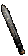
SwitchHeart CarverSwitch 2Heart Carver
Hellfire TorchAnnihilus +2Merc: Rogue Scout (Vigor)
HelmVampire Gaze OklepInnocenceGulLemZodHel · Lacquered PlateOrožjeFaithOhmJahLemEld · Demon CrossbowDruga rokaAnvilguard StrapRokaviceLava GoutŠkornjiMarrowwalk
OklepInnocenceGulLemZodHel · Lacquered PlateOrožjeFaithOhmJahLemEld · Demon CrossbowDruga rokaAnvilguard StrapRokaviceLava GoutŠkornjiMarrowwalk PasRazortail
PasRazortailKaj nosijo liki 90+ v S13 (skill Frenzy na 20)
Gheed's Fortune 59 %Gore Rider 53 %Raven Frost 44 %Highlord's Wrath 42 %Nosferatu's Coil 38 %Fortitude 26 %Soul Drainer 22 %Wisp Projector 22 %Steelrend 20 %Atma's Scarab 17 %Lacerator 16 %Veil of Steel 15 % Split ThrowGood
Split ThrowGood
Leveling
Leveling z drugim buildom, respec kasnejeGlavni skill Split Throw je na voljo od levela 24.Starter buildi za ta razred (Hiim): Big Shouts + Find Item (A2 Offensive Merc), Warcry, Hybrid Bleed WW, Bleed Double Throw. Respec: Akara (enkrat na težavnost) ali Token of Absolution.
Planerji (Hiim)
EndgameSplit Throwlevel 99 · Hiim
Stati: Str 20 · Dex 107 · Vit 358 · Ene 0
Battle Command 20Concentrate 20Increased Speed 20Split Throw 20Throwing Mastery 20Battle Orders 1Combat Reflexes 1Deep Wounds 1Double Swing 1Double Throw 1Frenzy 1Howl 1Iron Skin 1Natural Resistance 1Shout 1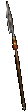
OrožjeBeast songGhost Glaive Druga rokaTwilight's Reflectionv socketih: 3× Ruby Jewel of Carnage · korupcija: socketi
Druga rokaTwilight's Reflectionv socketih: 3× Ruby Jewel of Carnage · korupcija: socketi HelmGiant SkullOklepTyrael's MightRokaviceSoul DrainerPasNosferatu's Coilkorupcija: PierceŠkornjiGore RiderAmuletHighlord's WrathPrstanWisp ProjectorPrstanBul Katho's Wedding BandHellfire TorchAnnihilus
HelmGiant SkullOklepTyrael's MightRokaviceSoul DrainerPasNosferatu's Coilkorupcija: PierceŠkornjiGore RiderAmuletHighlord's WrathPrstanWisp ProjectorPrstanBul Katho's Wedding BandHellfire TorchAnnihilusMerc: Rogue Scout (Vigor)
 OrožjeFaithOhmJahLemEld · Gorgon CrossbowDruga rokaAnvilguard StrapHelmAndariel's VisageOklepTemplar's MightRokaviceDracul's GraspŠkornjiMarrowwalkPasNosferatu's Coil
OrožjeFaithOhmJahLemEld · Gorgon CrossbowDruga rokaAnvilguard StrapHelmAndariel's VisageOklepTemplar's MightRokaviceDracul's GraspŠkornjiMarrowwalkPasNosferatu's CoilVideo in vodiči
 TravbarbUtilityStarter
TravbarbUtilityStarter
Leveling
Brez respecaGlavni skill Find Item je na voljo od levela 12.Hiim ga ima za starter build (farma: Travincal).V S13 je 0 od 7 najhitrejših igralcev imelo ta skill že na levelu 80. Do levela 95 so prišli v mediani 19,9. dan sezone.
Planerji (Hiim)
EndgameTravbarblevel 90 · Hiim
Battle Command 20Battle Cry 20Find Item 20Increased Speed 20Battle Orders 9Natural Resistance 5Combat Reflexes 1 Find Potion 1Howl 1Iron Skin 1Shout 1Taunt 1War Cry 1
Find Potion 1Howl 1Iron Skin 1Shout 1Taunt 1War Cry 1OrožjeBlade of Ali Babakorupcija: Faster Cast Rate
Druga rokaBlade of Ali Babakorupcija: Faster Cast Rate
HelmCrown of Thieveskorupcija: socketi
OklepEnigmaJahIthBer · Archon Plate RokaviceChance Guardskorupcija: Faster Cast Rate
RokaviceChance Guardskorupcija: Faster Cast Rate PasGoldwrapkorupcija: Faster Cast Rate
PasGoldwrapkorupcija: Faster Cast Rate ŠkornjiInfernostridekorupcija: Faster Run WalkAmuletBlood Craft - Barbariankorupcija: Faster Run WalkPrstanDwarf Starkorupcija: Faster Cast RatePrstanDwarf Starkorupcija: Faster Cast RateGheed's Fortune
ŠkornjiInfernostridekorupcija: Faster Run WalkAmuletBlood Craft - Barbariankorupcija: Faster Run WalkPrstanDwarf Starkorupcija: Faster Cast RatePrstanDwarf Starkorupcija: Faster Cast RateGheed's FortuneMerc: Desert Guard (Blessed Aim)
HelmCrown of Thieves
OklepHustleShaelKoEld · Archon Plate OrožjeArioc's NeedleRokaviceLaying of HandsŠkornjiInfernostridePasGoldwrap
OrožjeArioc's NeedleRokaviceLaying of HandsŠkornjiInfernostridePasGoldwrapKaj nosijo liki 90+ v S13 (skill Find Item na 20)
Gheed's Fortune 88 %Chance Guards 86 %Dwarf Star 78 %Blade of Ali Baba 68 %Naj's Puzzler 63 %Wealth 62 %Goldwrap 58 %Immortal King's Will 43 %Infernostride 40 %Crown of Thieves 34 %The Patriarch 12 %Goldskin 12 %Video in vodiči
Ostali na Hiim listi (Mid ali Bad): Fire Whirlwind (2x Flamebellow) (Mid), Leap Attack (Physical) (Mid).